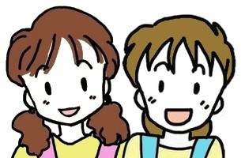
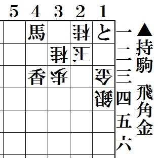

| 
<将棋ペン倶楽部>
「海老原辰夫詰将棋手筋集」を刊行
この度、「将棋を孫に伝える会」では「海老原辰夫詰将棋手筋集」を「解けてうれしい増刊号」として発行いたしました。
３手詰～９手詰、合計１００問。Ｂ７版ポケットサイズ６４頁。初級向好形作が満載です。
同氏は著名な詰将棋作家で「将棋世界」「近代将棋」「詰将棋パラダイス誌」（同人作家）などで大活躍。アマ強豪としても大変有名です。
今回、海老原氏の新題を懸賞出題いたします。正解者の中から抽選で５名様に本書をプレゼントいたします。
|
懸賞新題 海老原辰夫氏作 ７手詰 
懸賞締切日…
平成２７年 １月末日。当選者発表はこのＨＰにて
懸賞応募先…
「将棋を孫に伝える会」 三宅英治 まで
520-0025 大津市皇子が丘2-4-10-505
携帯:090-6678-3012 メール:kaitou6678@yahoo.co.jp
解答・問い合わせは☆こちら☆まで！
|
「将棋を孫に伝える会」では「盤と駒による世代間コミュニケーション」を広く呼びかけ、「将棋ファン」「詰将棋ファン」の底辺拡大のための活動を続けております。
「解けてうれしい詰将棋」の発行はその一環です。
今回の増刊号は子供達への普及に最適な小冊子に仕上がりました。
将棋を普及指導されている皆様から多くの子供達に配布頂ければと思います。
● サンプル進呈１冊〒ともに３００円。（９冊までは単価２００円＋送料１００円）
● １０冊以上単価１７０円（送料込）。５０冊以上単価１４０円（送料込）。
|